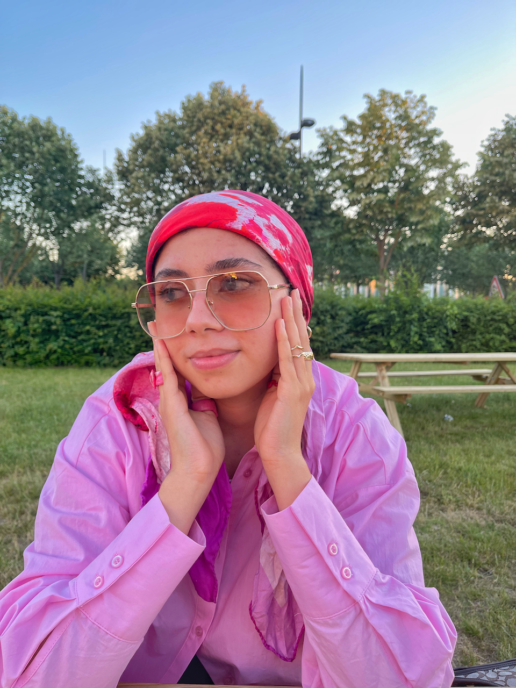

CV

À propos
Je m'apelle Léa, j'ai 23 ans, je vis en région parisienne.
Parcours scolaire
- MASTER COMMUNICATION ET STRATÉGIE DIGITALE - IICP: 2020-2022
Étude des techniques de transformation digitale des entreprises,
storytelling et brand content, référencement naturel,
gestion des outils du social media manager...
- LICENCE PROFESSIONNELLE DE JOURNALISME DE PROXIMITÉ - ESJ Lille : 2019-2020
Etude des techniques d'écriture, des médias, de l'actualité, journalisme web, photographie ...
- LICENCE II EN LANGUE ÉTRANGÈRES APPLIQUÉES - Université Evry val d’Essonne: 2017-2019
Etude de l'anglais, de l'espagnol et du chinois, ainsi que des matières d'applications comme l'économie, l'informatique...
Expériences professionnelles
- ASSISTANTE COMMUNICATION | TERRE ÉTERNELLE | DÉCEMBRE 2020 - JUILLET 2021
Création et production de contenus pour les réseaux sociaux Élaboration du planning éditorial
ASSISTANTE COMMUNICATION | WHITE BIRD JEWELLERY | JUIN - NOVEMBRE 2020
Création et production de contenus pour les réseaux sociaux Organisation de shootings
Développement d'une stratégie de communication sur les réseaux sociaux Veille médiatique et réseaux sociaux
Gestion des communautés sur les différents réseaux sociaux Développement d'une bonne relation avec les médias
Suivie des performances
- ASSISTANTE RELATION PRESSE | PRINTEMPS | FÉVRIER - MAI 2020
Recherche et écriture de contenus pour la page mode du magazine de l'enseigne. Suivi des retombées
Gestion des demandes shopping
Veille des réseaux sociaux
Réalisation des communiqués de presse
- REDACTRICE CONTENUS WEB | AFFICHES PARISIENNES | SEPTEMBRE - DECEMBRE 2019
Rédaction d'articles web et print.
Mise en page des articles sur InDesign.
Veille et partage des articles sur les réseaux sociaux
Compétences
- Pack office
- ADOBE IN DESIGN
- ILLUSTRATOR
- PHOTOSHOP
- PHOTOGRAPHIE
- RÉSEAUX SOCIAUX : Instagram, Twitter, Snapchat, Tiktok
- MONTAGE VIDÉO : Final cut pro, Wondershare filmora
LANGUES
- ANGLAIS courant
- ESPAGNOL intermédiaire
- CHINOIS intermédiaire
Diplômes et certifications
- Bac S
- Licence professionnelle de journalisme de proximité
HOBBIES
- Mode
- Beauté
- Films
- Séries
- Voyage
- Écriture
- Sport